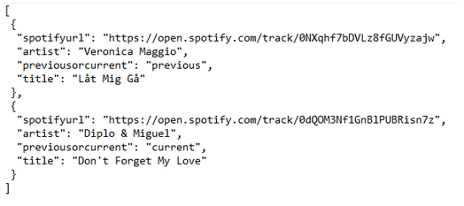
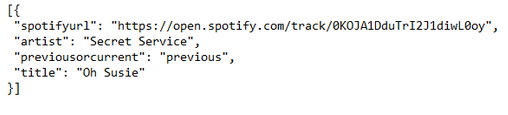

API-Dokumentation
Diggaren är en mashup-tjänst som hämtar en spotify-url till den föregående sången som spelats på vald SR-kanal samt den låt som spelas just nu, ifall det är en låt spelas just nu. Tanken är att man på ett smidigt sätt ska kunna hämta en spotify-url om man hörde en låt på radio som man tyckte om.
Detta sker genom att Diggarens server först gör ett anrop till SR’s API för att hämta namn och artist på den föregående och nuvarande låten (om sådan finnes). Därefter skickas namn och artist in som en query till Spotify’s API och låtarnas url returneras. Sedan slås namn, artist och url samman i JSON-objekt som Diggarens API returnerar till den kallande klienten.
Med hänsyn till tjänstens syfte har vi valt en minimalistisk approach till datan som vårt API returnerar och hålla den småskalig. Detta genom att endast returnera den del av informationen som hämtas från SR och Spotify’s API som anses vara relevant för tjänsten.
API-Beskrivning
För att få låtarna från en specifik radiokanal behöver du veta dess ID. Samtliga tillgängliga radiokanaler och deras ID går också att hämta från Diggarens API. Informationen går att få ut som JSON-objekt.
GET/radio/allchannels
Hämtar en JSONArray över alla radiokanaler. Listan innehåller namnet på kanalen, kanaltyp och kanalens ID.
Indata
Ej möjligt för GET
Returdata

GET /radio/{id}
Utifrån valt ID returneras en lista med ett eller två JSON-objekt: Låter som spelas nu och den föregående låt som spelades på vald radiokanal. Om en låt spelas just nu returneras två JSON-objekt, annars returneras endast den föregående låten. Objekten innehåller namn på låten, artist, en url till låten på spotify, samt om det är den nuvarande eller föregående låten.
Indata
Ej möjligt för GET
Returdata
Ex. 1: Två objekt
Ex. 2: Ett objekt
